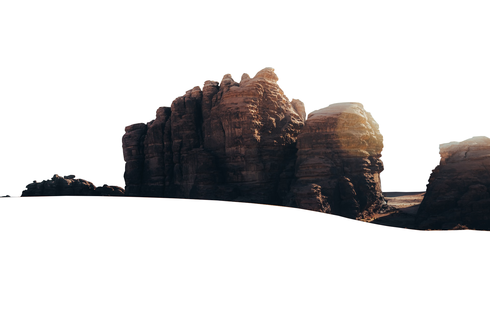
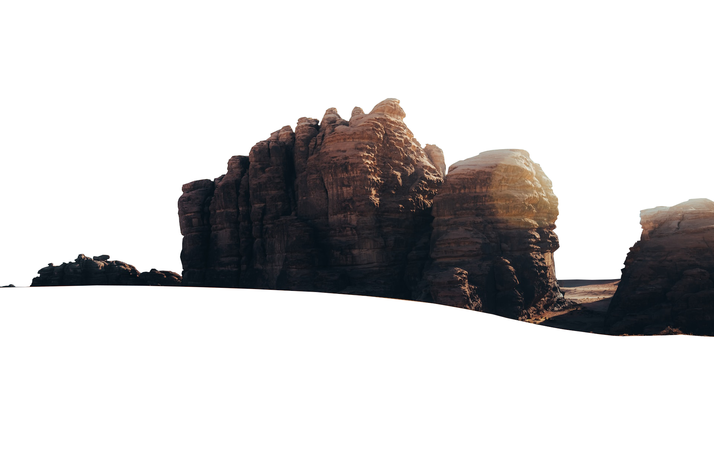
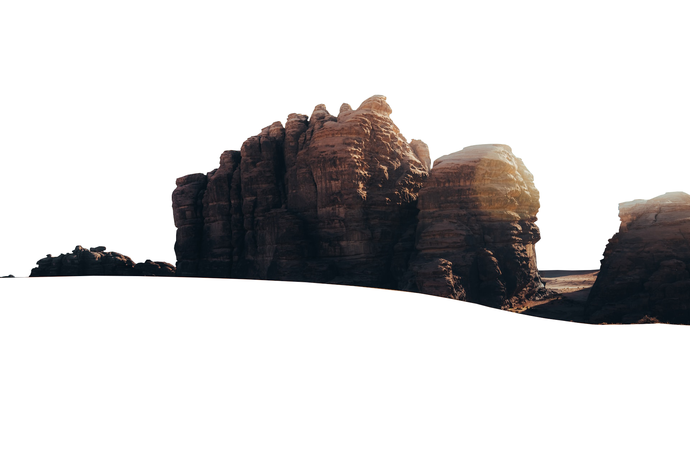
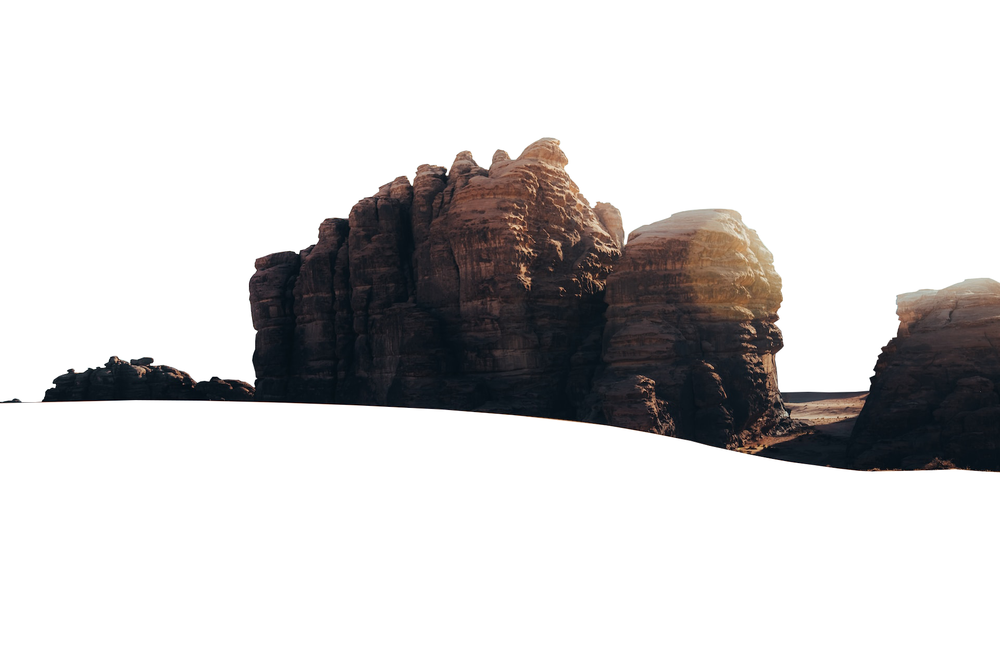

 





Thar is a desert region located in northwestern India and southeastern Pakistan. It is part of the larger Great Indian Desert, which stretches across an area of approximately 200,000 square kilometers (77,000 square miles). The Thar Desert is known for its arid and inhospitable conditions, characterized by vast stretches of sand dunes, rocky terrain, and a scarcity of water.
It has a rich cultural heritage, with several indigenous communities residing in the region, such as the Rajputs, Jats, Bishnois, and Bhils. These communities have adapted their lifestyles to the desert conditions and have unique traditions, arts, crafts, and cuisine that reflect their desert culture.
Tourism in the Thar Desert has gained popularity over the years, attracting visitors who are interested in experiencing the desert landscape, camel safaris, desert camping, and exploring the traditional villages and heritage sites in the region. Cities like Jaisalmer and Jodhpur in Rajasthan, India, serve as popular gateways to the Thar Desert and offer a glimpse into the desert way of life.
Desert Safari: The Thar Desert is famous for its desert safaris. Tourists can embark on thrilling camel or jeep safaris to explore the sand dunes, experience the local culture, and enjoy the mesmerizing sunset views.
Sam Sand Dunes: Located near the city of Jaisalmer in Rajasthan, Sam Sand Dunes are one of the most popular attractions in the Thar Desert. Visitors can enjoy camel rides, cultural performances, and spend the night in desert camps to experience the desert lifestyle.
Jaisalmer Fort: Situated in the city of Jaisalmer, the Jaisalmer Fort is a UNESCO World Heritage Site. This magnificent fort is made of yellow sandstone and is known for its intricate architecture, palaces, temples, and vibrant markets selling handicrafts and textiles.
Desert Festivals: The Thar Desert region hosts various desert festivals that showcase the rich cultural heritage of Rajasthan. The most famous one is the Jaisalmer Desert Festival, which features camel races, folk music, dance performances, and other traditional activities.
Wildlife Sanctuaries: Near the Thar Desert, you can find wildlife sanctuaries like the Desert National Park and Tal Chhapar Wildlife Sanctuary. These sanctuaries are home to unique flora and fauna, including the Great Indian Bustard, chinkara, blackbuck, and various bird species.